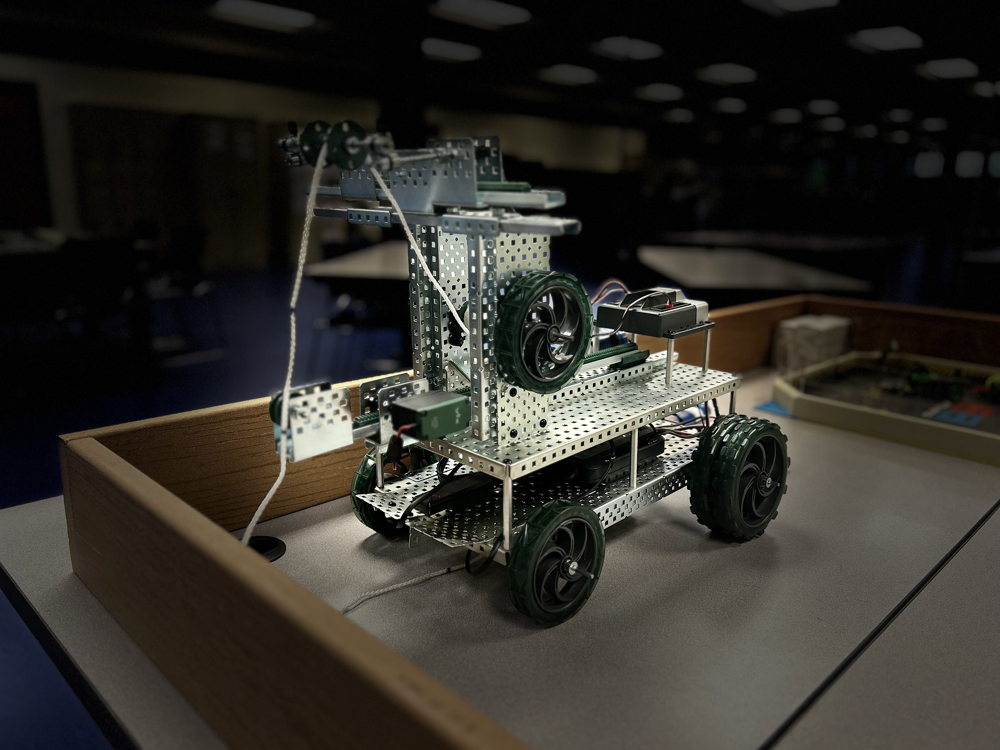

Specifications
At Fishing Remote Controlled Robot , we pride ourselves on providing the most detailed and accurate specifications for all your fishing needs. Our comprehensive specs section offers in-depth information on rods, reels, tackle, accessories, and more—helping you choose the perfect gear for every type of fishing adventure. Whether you're looking for lightweight rods with superior sensitivity or high-performance reels built for durability, our specifications guide ensures you make informed decisions based on your style, experience, and environment. Dive in to find the technical details that will elevate your fishing game!
- Dimensions: 30 x 15 x 10 in
- Weight: 20 pounds
- Battery: 7.2 vex
- Control Range: Up to 100 meters
- Material: High-strength ABS plastic, magnetic aluminum
- Operating Temperature: -10°C to 50°C
- Water Resistance: IP68 rated
